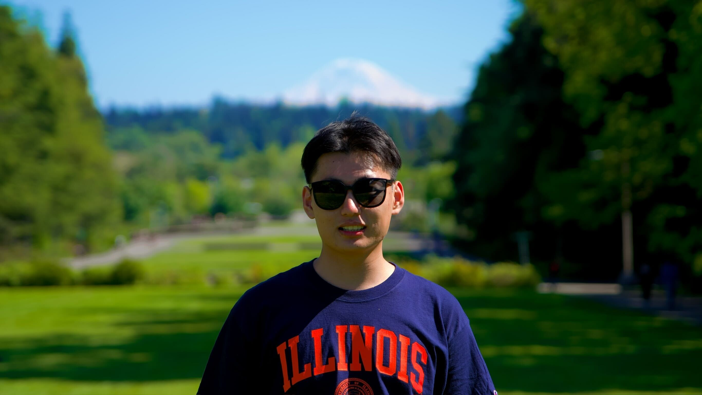
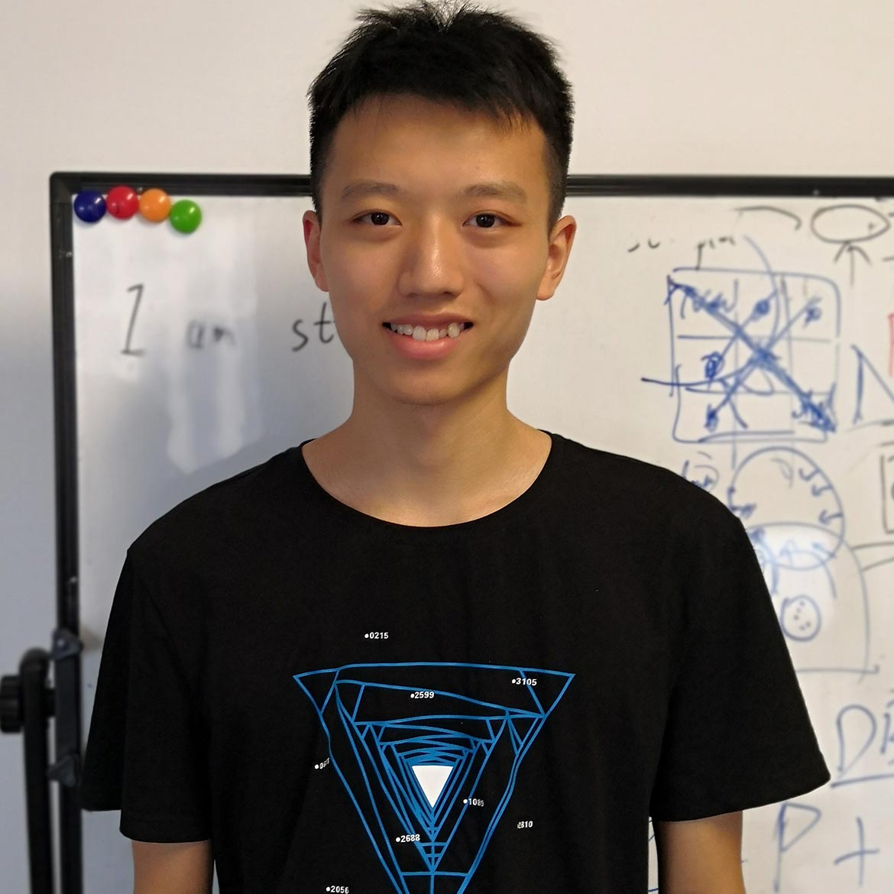

The world is its own best model… It is better to use the world as its own simulator
— Rodney Brooks
and let the body directly interact with the physical physics.
We introduce HumanEgo, a robot-data-free, hardware-agnostic, and data-efficient pipeline that learns robot manipulation policies from minutes of raw human egocentric videos—powered by a flow matching policy with dense auxiliary objectives.
Human egocentric video captures rich manipulation demonstrations without any robot hardware, yet transferring these skills to robots remains challenging due to the embodiment gap between human and robot in both visual appearance and kinematics. We present HumanEgo, a framework that bridges the embodiment gap by lifting each human demonstration to an entity-level representation of hand–object interaction, and training a flow matching policy with dense auxiliary objectives that amplify supervision from every trajectory. HumanEgo is robot-data-free, hardware-agnostic, data-efficient, and zero-shot human-to-robot transferable. With only 40 minutes of human videos per task, HumanEgo achieves 85% average success across four real-world tasks (70% with just 20 minutes), outperforms matched-time robot teleoperation by 32%, and robustly transfers zero-shot across novel robots, cameras, and environments.
System overview. Arm inpainting and visual keypoints bridge the visual gap; Interaction-Centric Tokens (ICT) encode spatial relationships among all entities; a flow matching policy with dense auxiliary objectives learns bimanual robot actions from minutes-scale human data.
A human demonstrator wears Aria Gen1 glasses and performs each task in any convenient environment — regardless of table height, lighting, or background, and without specialized workspace or calibration. Each demonstration takes only seconds.
Aria's onboard Machine Perception Services provide high-quality 6-DoF SLAM tracking, calibrated 3D hand pose estimation, and synchronized egocentric RGB streams — all from a single lightweight wearable, at 30 Hz.
HumanEgo achieves the highest success rate on every task, outperforming both human-video baselines and matched-time robot teleoperation.
Aria-recorded human demonstrations have higher image SNR, lower idle time, and cover a wider spatial distribution than robot teleop — quality and diversity both favor human data.
HumanEgo reaches 75% success with just 20 minutes of human videos and 95% by 30 minutes — far surpassing matched-time robot teleoperation.
Nine test scenes spanning three robot embodiments, three novel setups (height, viewpoint, camera) and three environment shifts (background, lighting, distractors).
A single policy trained on human data transfers zero-shot across novel embodiments, setups, and environments — all sectors stay above 85%.
Moving from visual-only inputs to our Interaction-Centric Tokens (ICT) lifts success rate from 32.5% to 95% — spatial structure matters far more than pixels.
Each auxiliary objective contributes independently; combining all three auxiliary losses takes success rate from 50% to 75% on Water Flowers.
Answer 1 goes here. Replace this placeholder with the actual response.
Answer 2 goes here.
Answer 3 goes here.


University of Maryland
We thank Eadom Dessalene, Yoonkyo Jung, Zikui Cai, and other members of the PRG Lab and Furong's Lab for their helpful feedback and support throughout this project.
@misc{humanego2026,
title = {HumanEgo: Zero-Shot Robot Learning from Minutes of Human Egocentric Videos},
author = {Wang, Zhi and He, Botao and Yu, Kelin and Lee, Seungjae and Gao, Ruohan and Huang, Furong and Aloimonos, Yiannis},
year = {2026},
eprint = {XXXX.XXXXX},
archivePrefix = {arXiv},
primaryClass = {cs.RO}
}